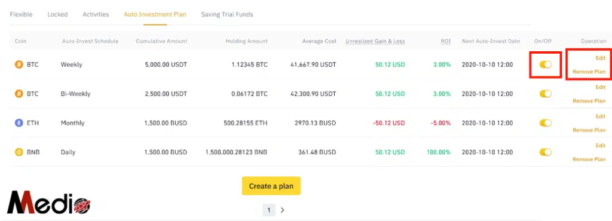

15.3. Đầu tư tự động và Tối ưu lợi nhuận trong Crypto
Có thể trong chúng ta còn nhiều điều nghi ngờ với Crypto đặc biệt là những bạn đã quen với các thị trường truyền thống bởi Crypto chưa được pháp luật bảo hộ, biến động mạnh, nhiều thuật ngữ kỹ thuật phức tạp nên bị lừa đảo nhiều.
Với bản thân mình cũng vậy, trước đây mình có thời gian dài coi Crypto ( thực ra lúc đấy chưa có thuật ngữ này mà mọi người đều gọi là coin) là ảo, bong bóng và không quan tâm mà chỉ tập trung vào Forex.
Nhưng đúng là không cưỡng lại sức hút của đồng tiền, ban đầu nghe và đọc mình không quan tâm vì nghỉ là ảo. Sau khi nghe chính thằng bạn mình kể nó kiếm nhiều tiền từ coin dù vẫn nghĩ là bong bóng nhưng mình vẫn ham và tìm hiểu.
Khi đó thị trường còn rất sơ khai, sư thật dù mình đầu tư một phần nhiều tài sản của bản thân vào Crypto nhưng khi đó mình không mang quá nhiều niềm tin mà chỉ mang tính đầu cơ là chính.
Vì thời điểm đó mình không tin lắm vào việc coin thay thế tiền tệ truyền thống, phi tập trung, thay đổi thế giới và những ứng dụng ở các lĩnh vực khác thì chưa có sự thực tế mà mới chỉ nằm trên giấy.
Nhưng ở thời điểm hiện tại dù thị trường down rất sâu, và có thể sâu hơn nữa nhưng mình vẫn tràn đầy lòng tin vào thị trường bởi vì thị trường crypto, công nghệ Blockchain bây giờ nó đã rất khác.
Có 1 khoảng thời gian trong downtrend mình không quan tâm đến Crypto nhiều. Điều này một phần do mình tập trung vào Forex là chính, một phần do downtrend dài sẽ ít để ý tìm hiểu sâu về thị trường.
Và không tìm hiểu thì không biết các nền tảng, công nghệ vẫn “âm thầm” phát triển trong thời gian đó.
Và đó là sự thiếu sót lớn nhất của mình, vì sau này mình tìm hiểu sâu hơn về công nghệ của các nền tảng, Defi, GameFi, NFT,… mình chỉ biết bất ngờ và rối loạn khi thị trường đã khác trước rất nhiều rồi.
Mình hy vọng cả mình và mọi người sẽ không như mình lúc đó. Rời bỏ thị trường, xóa app khi downtrend rồi bỏ lỡ những cơ hội.
Trở lại nội dung chính của bài này, mình sẽ cố gắng chia sẻ cách đầu tư tự động không tâm lý, nhàn nhất, tối ưu lợi nhuận, thời gian để mọi người không có nhiều thời gian hay hiểu biết quá nhiều về công nghệ cũng có thể làm được.
Đó sử dụng tính năng Đầu tư tự động từ Binance
Cảnh báo: Đầu tư thị trường tài chính là thị trường rủi ro có thể khiến bạn mất hết tiền, hãy tìm hiểu kỹ, kiểm soát rủi ro và chỉ sử dụng số vốn nhàn rỗi của mình.
Nguyên tắc vận hành
Nguyên tắc vận hành của cách đầu tư này là sử dụng DCA
DCA (Dollar – Cost Averaging) hay còn gọi là chiến lược bình quân giá. Đây là chiến lược mà trong đó, nhà đầu tư sẽ chia nhỏ số tiền đầu tư thành nhiều khoản khác nhau, thay vì đầu tư hết vào một lần.
Sự biến động của một sản phẩm tài chính là rủi ro đi lên hoặc đi xuống và tính chu kỳ là điều luôn xảy ra trong thị trường tài chính. DCA sẽ giúp giảm thiểu rủi ro biến động đo bằng cách cố gắng giảm tổng chi phí đầu tư trung bình.
Hiểu một cách đơn giản nhất, DCA là chiến lược phân nhỏ số tiền đầu tư thành nhiều phần khác nhau thay vì đầu tư tất vào một lần. Khác với chiến thuật với mua đáy bán đỉnh, DCA sẽ không giúp nhà đầu tư tối đa hóa lợi nhuận mà chỉ tập trung vào việc giảm thiểu tổn thất, tận dụng lợi thế và tăng trưởng trong thời gian dài.
Chiến lược này thường được áp dụng nhiều nhất trong lĩnh vực tài chính, chứng khoán và tiền điện tử.
Tuy nhiên, điều bạn phải nhớ kỹ không nên áp dụng với những đồng có tính biến động cao, thanh khoản kém, coin rác,…
Đầu tư tự động từ Binance sẽ vận hành như thế nào?
Binance sẽ giúp bạn định kỳ mua các đồng crypto theo kế hoạch chu kỳ đã định chẳng hạn theo ngày, tuần, tháng, 2 tuần 1 lần,… vào thời điểm nhất định mà bạn cài đặt.
Chẳng hạn mình cài đặt mỗi ngày mình sẽ dùng 10 USDT để mua Bitcoin vào 6h sáng mỗi ngày. Đều đặn trong một khoảng thời gian dài 2,3 năm và tích lũy chờ đến lúc giá cao và mình muốn bán.
Ví dụ cụ thể chẳng hạn mỗi ngày mình đầu tư 10$ vào BTC từ 01/01/2018 đến 21/04/2021 ( khoảng hơn 3 năm) với phí giao dịch khoảng 0,02%
Giá BTC ngày 01/01/2018 là: 14.093 USD
Giá BTC ngày 21/04/2021 là: 56.294 USD
Và đây là kết quả
Ở đây mọi người để ý giúp mình vào thông số trên để so sánh giữa việc bạn DCA mỗi ngày 10$ ( hàng trên) và mua luôn hết 1 lần ( hàng dưới)
Lợi nhuận của DCA sẽ là hơn 600% trong hơn 3 năm. Một con số không hề nhỏ, thụ động và tương đối an toàn.
Với 10$ tiết kiệm mỗi ngày ( ~ hơn 230.000 VND). Sau hơn 3 năm bạn sẽ có số tiền là 84,88k USD ( ~ gần 2 tỷ VND)
Ngoài ra, chúng ta cùng so sánh giữa việc mua all in 1 lần và sử dụng DCA qua hình bên dưới
Đường màu xanh là giá trị khoản đầu tư theo DCA
Đường màu tím là giá trị khoản đầu tư theo mua all in 12,07k USD vào ngày 01/01/2018
Ở đây, mình chọn ngẫu nhiên ví dụ thời điểm ngày bắt đầu giá BTC là 14.093 ( không phải là đáy của chu kỳ giảm), ngày bán 21/04/2021 giá 56.294 (không phải đỉnh của chu kỳ tăng) vì chúng ta không thể chọn bán hay mua chính xác ở đáy hay đỉnh được.
Như bạn có thể thấy khoảng cuối năm 2019 sau khoảng gần 2 năm, 2 khoản đầu tư này có giá trị tương đương nhau thể hiện ở sự giao nhau của 2 đường đồ thị.
Tuy nhiên, ở thời điểm này với DCA mình mới chỉ đầu tư hơn 7k $ mà thôi, còn với cách mua all in mình đã đầu tư 12,07k$ rồi.
Và càng ngày theo thời gian bạn càng thấy sự bứt phá của khoản đầu tư sử dụng DCA hàng ngày.
Bạn có thể xem chi tiết hơn thống kê của ví dụ trên chính xác đến từng ngày tại đây:
Đây mới hoàn toàn chỉ là thuần DCA, chưa tính đến việc có thể tối ưu lợi nhuận hơn mà mình sẽ hướng dẫn bên dưới.
Vì sao nên dùng đầu tư tự động?
Dù phần lớn vốn mình vẫn DCA theo cách sử dụng Price Action mua tại các vùng Keylevel W, M như mình đã chia sẻ nhưng mình vẫn để một phần vốn để sử dụng hình thức Đầu tư tự động này. Bởi những lý do:
Tránh cảm giác FOMO
Một trong những việc khó nhất trong đầu tư là trải qua các cảm giác FOMO, FUD, cảm tính khi tham gia dù trước đó có thể chúng ta đã có kế hoạch phân bổ vốn rõ ràng, nhưng cảm xúc, lòng tham chi phối khiến chúng ta không thể giữ kỷ luật và làm theo kế hoạch.
Việc có 1 danh mục phân bổ vốn bằng Đầu tư tự động mua hàng ngày sẽ giúp mình tránh cảm giác FOMO vì thị trường có không về mức giá mình định DCA theo Keylevel thì ít nhiều mình cũng đã mua được một chút ở vùng giá này rồi.
Điều này sẽ bổ trợ cho việc thực hiện kế hoạch đầu tư DCA theo khung tuần, tháng của mình giữ được kỷ luật hơn.
Nhàn và Đơn giản
Trước đây, việc DCA hàng ngày như vậy dù chúng ta đều biết là mang lại hiệu quả cao nhưng việc ngày nào hoặc tuần nào cũng vào app để mua 1 ít coin trải dài qua vài năm rất bất tiện và dễ bị cảm xúc chi phối khi ngày nào cũng phải vào xem giá coin lên xuống.
Đây là cách đầu tư vừa chủ động, vừa thụ động khi bạn có thể chọn đồng coin bạn muốn mua, kế hoạch do mình đặt ra nhưng không phải thao tác gì và chờ khoản đầu tư sinh sôi nảy nở mà thôi.
Lợi thế nhờ chu kỳ tích lũy, tăng trưởng của thị trường
Trong hầu hết các thị trường, mọi người có thể thấy thời gian downtrend, sideway thường sẽ lâu hơn rất nhiều so với khi tăng trưởng. Vì vậy, với việc mua cùng số tiền mỗi ngày thì số tiền bạn mua ở các vùng downtrend, sideway sẽ nhiều hơn so với khi tăng trưởng.
Vì vậy, bạn có thể yên tâm là sẽ mua được nhiều coin ở những vùng giá thấp hơn.
Không cần phải bỏ nhiều vốn cùng một lúc
Cách làm này còn có lợi thế cho những ai hiện tại chưa có vốn tức thời, thay vì nghĩ tới việc vay mượn, huy động vốn chúng ta chỉ cần đều đặn hàng tháng đưa vào một khoản tiền tiết kiệm từ lương, thu nhập của tháng đó.
Nhược điểm của việc đầu tư tự động
Đương nhiên không có gì là hoàn hảo cả cách làm này cũng sẽ có những nhược điểm:
- Mang tính an toàn nhiều hơn việc tối ưu lợi nhuận
- Khi mua với số lượng quá nhỏ cũng sẽ mất nhiều phí giao dịch hơn so với mua số lượng lớn.
- Không phải giải pháp đầu tư kiếm lợi nhuận nhanh trong thời gian ngắn.
Cách tối ưu Đầu tư tự động
Nên mua theo ngày, hoặc tối đa là tuần
Thị trường Crypto biến động rất nhanh và mạnh vì vậy chúng ta chỉ nên đầu tư theo chu kỳ mua ngày hoặc tối đa là tuần để tối ưu hơn.
Chi phí tối thiểu bạn có thể cài đặt mua là từ 1$ nên với số vốn nhỏ bạn vẫn có thể mua theo ngày được.
Chỉ chọn các đồng coin top và thanh khoản lớn
Việc đầu tư tự động theo DCA cần duy trì lâu dài qua các chu kỳ tăng giảm của thị trường nên chúng ta cần chọn các đồng coin top để đảm bảo an toàn.
Ngoài ra, vì chúng ta mua với số lượng ít nên khi mua các đồng coin top có thanh khoản lớn các khoản phí, chênh lệch spread cũng sẽ thấp hơn.
Tuy hiện tại Binance cũng chỉ cho phép lựa chọn một số ít các đồng Crypto trong lập kế hoạch đầu tư tự động thôi nhưng vẫn là rất nhiều đồng để chọn lựa.
Bản thân mình thì mình sẽ chọn các đồng lớn như BTC, ETH, BNB,… hoặc các đồng token nền tảng như AVAX, FTM,…, hoặc token của sàn lớn như FTX.
Đấy là gợi ý của mình nhưng mọi người hãy tìm hiểu kỹ trước khi chọn bất cứ một đồng token nào để làm kế hoạch dài hơi nhé! Vì bản thân phải tự tìm hiểu và tin thì mới xác định đầu tư lâu dài mà lòng tin không bị lung lay được.
Bỏ trứng vào nhiều giỏ
Để giảm bớt rủi ro mọi người có thể chia số vốn mua DCA hàng ngày ra vài đồng coin khác nhau. Chẳng hạn nếu bạn dự định mua 10$ mỗi ngày có thể chia ra 5$ mỗi ngày cho BTC và ETH.
Tối ưu lợi nhuận từ nguồn vốn
Cái khó khi bạn tham gia thị trường Crypto là bạn cần phải dùng VND để mua USDT và để sẵn ở Binance thì mới có thể mua tự động hàng ngày được. Và tỉ giá VND và USDT thường sẽ biến động và không cố định.
Cái đích của chúng ta đa phần sẽ đều là làm sao để chốt ra VND nhiều nhất. Mọi người có thể tham khảo cách mình vẫn làm để tối ưu lợi nhuận nhé.
Lựa chọn thời điểm mua USDT
Vì chúng ta không cần ngay lập tức USDT tại một thời điểm để mua nên bạn có thể chọn các thời điểm giá USDT thấp để tích lũy.
Do cung cầu nên giá USDT thường sẽ biến động ngược với xu hướng của thị trường.
Khi thị trường tăng mạnh nhiều người chốt lãi và bán USDT thì giá USDT thường sẽ thấp hơn Khi thị trường giảm đột ngột nhiều người có nhu cầu mua USDT để vào bắt đáy nên tỉ giá thường sẽ cao. Khi thị trường giảm dài hạn và sideway lâu giá USDT thời điểm này cũng sẽ thấp vì nhiều người dời bỏ thị trường nên nhu cầu mua vào thấp. Vì vậy, để có mức giá tốt chúng ta đừng vội vàng mua ở USDT khi thị trường giảm mà chờ đến những ngày thị trường xanh, tăng mạnh thì mới mua để có tỉ giá tốt nhất.
USDT dự trữ sẵn để chờ DCA vẫn sẽ có lãi kép hàng ngày
Có một điểm rất hay ở Binance là họ có cài đặt để tự động rút tiền từ USDT gửi Tiết kiệm linh hoạt để mua coin ở Đầu tư tự động nếu số dư ví Spot không đủ.
Vì vậy bạn có thể gửi tiết kiệm USDT với tỉ lệ lãi 10% với khoản 2000$ và trên 2000$ sẽ là 3%. Tức là nếu bạn gửi tiết kiệm 5000$ thì sẽ có 2000$ được tính lãi 10% và 3000$ được tính lãi 3%. Đây là mức lợi nhuận rất hấp dẫn là tiền $ và còn được trả lãi theo ngày.
Như vậy, bạn cũng sẽ không sợ các khoản USDT dự trữ không đem lại lợi nhuận gì. Ngoài ra, tiền lãi Binance sẽ trả theo ngày về ví của bạn và cũng cho phép bạn cài đặt tự động cộng dồn số lãi này tiếp tục vào tài khoản tiết kiệm linh hoạt để có lãi kép hàng ngày luôn.
Với những bạn nào muốn tích trữ USDT số lượng lớn để chờ mua coin theo khung tuần, tháng hoặc có nhận lãi từ việc cung cấp Swap Farming có thể sử dụng số USDT lãi này để mua coin tự động cũng là một cách tận dụng lãi kép.
Lưu ý: Dù việc gửi USDT tiết kiệm như thế này mình cũng đánh giá là khá an toàn nhưng vẫn sẽ có những rủi ro về sàn Binance hay USDT. Vì vậy, tuyệt đối không mang hết tiền tiết kiệm từ ngân hàng để chuyển lên Binance gửi.
Tiếp tục lãi kép từ Token đã mua khi đầu tư tự động
Với các đồng Token đã mua hàng ngày sẽ tự động được Binance đưa vào Tiết kiệm linh hoạt. Để xem được những khoản này vào [Ví] và chọn [ Ví Earn]
Tỉ lệ % lợi nhuận sẽ tùy vào từng đồng Token, tùy từng thời điểm, không phải quá cao do chỉ là tiết liệm linh hoạt nhưng với việc chúng ta đầu tư trong dài hạn 2,3 năm thì cũng sẽ là con số đáng lưu tâm. Và quan trọng việc này hoàn toàn được làm tự động nên chúng ta sẽ tối ưu lợi nhuận tốt nhất có thể.
Và bây giờ mình sẽ bước thực hành
Đây là hướng dẫn được mình trích dẫn lại từ hướng dẫn của Binance
Nếu chưa có tài khoản Binance bạn có thể đăng ký tại đây để được giảm 20% phí giao dịch trọn đời.
1. Đăng nhập vào tài khoản Binance, rồi nhấp vào [Earn] – [Đầu tư tự động ]. Hoặc, bạn có thể mở Ứng dụng Binance, rồi nhấn vào [Thêm] – [Đầu tư tự động].
2. Bạn sẽ thấy đồng tiền mã hóa có thể dùng để đăng ký Đầu tư tự động.
Bạn có thể chọn tạo Kế hoạch đầu tư tự động danh mục đầu tư để mua nhiều loại tiền mã hóa trong một danh mục đầu tư hoặc tạo Kế hoạch đầu tư tự động cho một đồng tiền mã hoá.
Trước khi đăng ký, bạn có thể chọn khung thời gian của tài sản để kiểm tra ROI được mô phỏng. Bạn cũng có thể nhấp vào biểu tượng biểu đồ để xem hiệu suất lịch sử của tài sản.
Nếu trên ứng dụng Binance thì bạn có thể làm như video sau:
Trang web:
Bước 1. Nhấp vào [Tạo kế hoạch] bên cạnh coin bạn muốn đầu tư tự động.
Bước 2. Nhập số lượng đăng ký và stablecoin bạn muốn sử dụng. Hiện tại, Binance hỗ trợ USDT và BUSD. Chọn chu kỳ lặp lại theo ngày, theo tuần, hai tuần một lần hoặc theo tháng. Bạn cũng có thể ấn định ngày giờ mua cụ thể.
Bước 3. Bạn chọn bật [Sử dụng số dư Tiết kiệm Linh hoạt]. Sau khi bật tùy chọn này, nếu số dư trong Ví Spot của bạn không đủ, hệ thống sẽ tự động rút tài sản từ tài khoản Tiết kiệm Linh hoạt của bạn để hoàn tất giao dịch mua.
Bước 4. Kiểm tra phần tóm tắt và nhấp vào [Xác nhận] để đăng ký.
3. Bạn có thể xem các kế hoạch Đầu tư tự động hiện tại trong mục [Kế hoạch đầu tư tự động của tôi]. Để quản lý kế hoạch Đầu tư tự động của bạn, hãy nhấp vào [Đến trang Ví Earn].
Để xem lịch sử mua theo hình thức Đầu tư tự động, hãy nhấp vào [Đến trang Lịch sử].
4. Chuyển đến [Kế hoạch đầu tư tự động] để xem tất cả kế hoạch. Để tạm dừng hoặc tiếp tục một kế hoạch, hãy nhấn nút bên dưới nút [Bật/Tắt]. Để sửa một kế hoạch như thay đổi tần suất đầu tư, hãy nhấp vào [Chỉnh sửa]. Để ngừng vĩnh viễn một kế hoạch, hãy nhấp vào [Xóa kế hoạch]. 
5. Bạn có thể xem số tiền mã hóa đã mua trong phần [Lịch sử Đầu tư tự động].
Như vậy là đã xong!
Ngoài ra, nếu bạn muốn đầu tư tự động nhiều đồng coin một cách đơn giản hơn có thể sử dụng tính năng tạo kế hoạch đầu tư tự động theo danh mục đầu tư. Phần này bạn sẽ chọn các đồng coin bạn muốn đầu tư rồi chọn phân bố tỉ lệ vốn theo tỉ lệ bao nhiêu % Binance sẽ tự động chia và mua. Tuy nhiên, bản thân mình vẫn sử dụng cách cài đặt riêng cho từng đồng coin như bên trên để quản lý, chỉnh sửa, tùy biến dễ hơn. Vì mình cũng đầu tư tự động khoảng 3,4 đồng mà thôi nên việc setup cũng rất nhanh. Bạn nào muốn tạo danh mục có thể xem hướng dẫn bên dưới
Mua USDT qua P2P của Binance
Với các bạn mới thì còn một bước rất quan trọng đó là mua USDT bằng VND qua P2P của Binance. Đây là hình thức mua bán qua lại giữa người dùng trực tiếp mà Binance chỉ là trung gian mà thôi. Link giao dịch P2P của Binance tại đây
Về nguyên tắc giao dịch của P2P thì bên bán USDT khi đăng quảng cáo Binance sẽ khóa số USDT này của họ lại, khi bạn mua bạn sẽ chuyển khoản cho người bán qua tài khoản ngân hàng. Sau khi bạn ấn xác nhận đã chuyển tiền, bạn cần chờ bên bán họ xác nhận là đã nhận được tiền chuyển từ bạn và giao dịch sẽ được hoàn tất. Binance sẽ chuyển USDT về ví Funding của bạn. Và bạn cần vào chuyển USDT từ ví Funding sang ví Spot để sử dụng nhé!
Lưu ý: Khi giao dịch mua bán nên chọn những shop có số lượng lệnh lớn, tỉ lệ giao dịch thành công cao ( trên 98%) vì họ là những bên chuyển mua bán USDT nên thường sẽ an toàn và được xác nhận nhanh hơn. Ngoài ra, khi xảy ra tranh chấp, do Binance đã khóa USDT của người bán rồi nên khi giao dịch bạn cứ yên tâm. Nếu thời gian quá lâu mình đã chuyển khoản rồi mà họ không mở khóa thì bạn chọn khiếu nại và gửi ảnh chụp đã chuyển khoản là được.